| データ解析のための統計モデリング入門 |
| データ解析のための統計モデリング入門 |
確率分布 |
乱数発生 |
glm() の family |
よく使うリンク関数 |
|
（離散） |
二項分布 |
rbinom() |
binomial |
logit |
ポアソン分布 |
rpois() |
poisson |
log |
|
負の二項分布 |
rnbinom() |
glm.nb() |
log |
|
（連続） |
ガンマ分布 |
rgamma() |
gamma |
log |
正規分布 |
rnorm() |
gaussian |
identity |
応答変数の上限が定まっている場合に利用される。
二項分布を用いたGLMのひとつ。 ロジットリンク関数以外に、プロビットリンク関数やcomplementary log-log リンク関数などが用いられる。
種子の生存確率  について、
について、
| 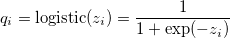 | (6.16) |
で、説明変数に  と 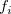 を用いて
と 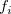 を用いて
| 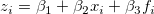 | (6.17) |
とする。 これは、
| 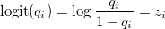 | (6.18) |
とロジット関数として表すこともできる。
つまり、ロジスティック関数とロジット関数はお互いに逆関数の関係にある。
尤度関数の対数を取り、対数尤度関数
| 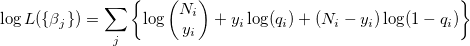 | (6.19) |
を最大化する  s を探し出す1。
s を探し出す1。
もし各個体について
y 生存数
N-y 死亡数
のようにデータが得られていれば、
glm(cbind(y, N-y)~x+f, data=d, family=binomial)
とする。
一方、各個体ごとに y = 1（生存）、y = 0 （死亡）のようにデータが得られていれば、単純に
glm(y~x+f, data=d, family=binomial)
としてよい。
式(6.18) より左辺をオッズに変換して、
| 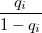 | 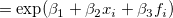 | (6.20) | ||
 |
 |
(6.21) |
と書ける。 つまり、 が1増えるとオッズは 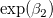 倍増え、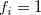 であれば（ のときに比べて）オッズは 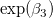 倍増える。
のときに比べて）オッズは 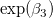 倍増える。
Rの MASS パッケージの関数 stepAIC() を用いると、ネストしているモデルのAICを自動的に比較しながら、AIC最小のモデルを選択できる。
> d <- read.csv("data4a.csv")
> head(d,n=5)
N y x f
1 8 1 9.76 C
2 8 6 10.48 C
3 8 5 10.83 C
4 8 6 10.94 C
5 8 1 9.37 C
> fit01 <- glm(cbind(y,N-y)~x+f, data=d, family=binomial)
> fit01
Call: glm(formula = cbind(y, N - y) ~ x + f, family = binomial, data = d)
Coefficients:
(Intercept) x fT
-19.536 1.952 2.022
Degrees of Freedom: 99 Total (i.e. Null); 97 Residual
Null Deviance: 499.2
Residual Deviance: 123 AIC: 272.2
> library(MASS)
> stepAIC(fit01)
Start: AIC=272.21
cbind(y, N - y) ~ x + f
Df Deviance AIC
<none> 123.03 272.21
- f 1 217.17 364.35
- x 1 490.58 637.76
Call: glm(formula = cbind(y, N - y) ~ x + f, family = binomial, data = d)
Coefficients:
(Intercept) x fT
-19.536 1.952 2.022
Degrees of Freedom: 99 Total (i.e. Null); 97 Residual
Null Deviance: 499.2
Residual Deviance: 123 AIC: 272.2
線形予測子
| 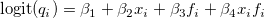 | (6.22) |
を考える。
Rでは、
glm(cbind(y, N-y)~x*f, data=d, family=binomial)
のようにすればOK。
交互作用を入れない場合
(Intercept) x fT
-19.536 1.952 2.022
と入れた場合
(Intercept) x fT x:fT -18.52332 1.85251 -0.06376 0.21634
とでは、 の効果は随分異なるように見えるが、結果を図示するとほとんど変わらないことがわかる。 交互作用項の解釈は数値だけ見ていては結構難しい。
むやみに交互作用は入れないこと
個体差や場所差をモデルに組み込めば、交互作用は消えることが多い（第7章）
以下のような作法を慎もう。
観測値を割り算して分析用データにする
観測値を変数変換する
複数の観測値をひとつの平均値に直してしまう
その理由は、
情報が失われる（300/1000と3/10はどちらも3割だが、確からしさの度合いが違う）
変換後の値はどう分布する？（分母分子に誤差あり、カウントデータに1を足して対数変換...）
線形予測子の中でパラメータがつかない項
例えば、
 調査地番号
調査地番号
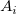 面積
明るさ
 植物個体数
植物個体数
のようなデータで植物個体の密度が明るさにどう左右されているか知りたいとする。 このとき、植物個体の密度は 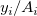 であるが、割り算値を作るのではなく、
| 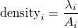 | (6.23) |
を考え、
| 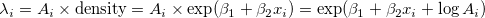 | (6.24) |
とモデル化する。 この 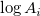 がオフセット項。
glm(y~x, offset=log(A), family=poisson, data=d)
ガンマ分布の確率密度関数は
| 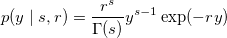 | (6.25) |
で、
 : shape パラメータ
: shape パラメータ
 : rate パラメータ（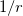 : scale パラメータ）
: rate パラメータ（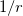 : scale パラメータ）
平均 : 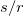
分散 : 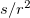
である。 ここで、
: 花の重量
: 葉の重量
というデータについて、 が平均 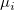 のガンマ分布に従っているとする。 さらに、
| 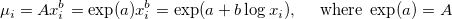 | (6.26) |
と仮定する。 つまり、
| 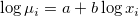 | (6.27) |
となる。
glm(y~log(x), family=Gamma(link="log"), data=d)
Footnotes
は s の関数である。| データ解析のための統計モデリング入門 |